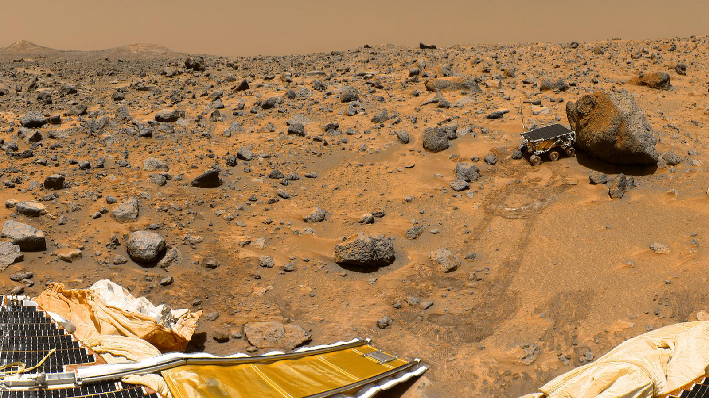
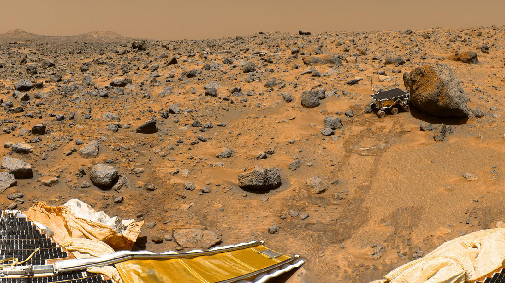

Exploration of Mars
Posted December 2018
This year was marked with exciting news and discoveries about Mars, hence this article will attempt to provide a brief overview of our collective efforts in exploring the planet.
Mars is our second closest neighboring planet (Venus is closer), and because of its distinct reddish appearance it is often called the red planet. It is a terrestrial planet with a diameter of about a half of Earth's, which makes it larger only than Mercury of all planets in the Solar system. Its mass is about 11% of Earth's mass, and the surface gravity is about 38% of Earth's. Mars has a very thin atmosphere with a surface atmospheric pressure of about 1% of Earth's. The daytime temperatures are in the broad range from -150°F at winter poles up to 95°F in equatorial summer, again, due to the thin atmosphere.

 

Mars has been a subject of our interest for quite a long time. Since the 1960s, over 40 spacecraft were sent to explore Mars; however, it is also considered an extremely difficult target since about two-thirds of these missions failed to reach their destination (informally known as the Mars Curse).
So far four space agencies have reached Mars, including NASA, Roscosmos (Russian Federation Space Agency), ESA (European Space Agency), and ISRO (Indian Space Research Organization). A trip to Mars is about 300 million miles, and on average takes about 7-10 months to complete. Note that to date none of the missions have returned a sample to Earth.
Currently, six orbiters, two rovers, and a stationary lander are exploring the planet. The orbiters are Mars Odyssey (by NASA, landed in 2001), Mars Express (ESA, 2004), Mars Reconnaissance Orbiter (NASA, 2006), Mars Orbiter Mission (ISRO, 2014), MAVEN (NASA, 2014), and the Trace Gas Orbiter (ESA-Roscosmos, 2017). The two rovers—Opportunity and Curiosity, and the lander—InSight, are part of missions by NASA.
Opportunity rover is part of NASA's Mars Exploration Rover mission. It landed on the planet in 2004. The rover is roughly the size of a compact car (shown below). The planned duration of its mission was 90 Martian days (about 93 Earth days) referred to as sols. Interestingly, Opportunity was active until a few months ago, and exceeded its planned mission by over 14 years. Unfortunately, in June this year a strong wind storm hit the planet (Mars gets huge planet-wide tempests) creating a layer of thick dust, which seems to be fatal for the rover. On June 12, Opportunity entered hibernation and has been silent since. It is not clear if there was a mechanical failure or whether the dust just completely covered its solar panels. NASA has made several efforts to establish a contact, and they still hope that the rover's resilience will prevail one more time (e.g., winds may clean up the dust from the solar panels). Among the discoveries by Opportunity are finding extramartian meteorites and providing the evidence that liquid water existed on Mars in the past.
In 2012 NASA sent the Curiosity rover, as part of the Mars Science Laboratory mission. Its goals include investigating the habitability conditions for supporting future human missions, and investigating the planet's geology and climate. The initially planned activities were for a 2-year period, which afterward were extended by NASA without any scheduled end of the mission. The rover has several different cameras and spectrometers, radiation detectors, environmental weather sensors, and a robotic arm for picking up samples and drilling into the surface. It is powered by a radioisotope thermoelectric generator.
The lander InSight touched down on Mars' surface in November 2018. Unlike the rovers that can travel around, InSight is stationary, and it is positioned in a large plateau area. Its main goals are studying the interior structure and heat flow of Mars, and measuring seismic activities, or the so-called Marsquakes (i.e., the equivalent of earthquakes). To this end, a seismometer will monitor vibrations to understand the composition of materials that make the interior of the planet, as well as to gain more knowledge about the formation of Mars. The mission also includes two micro-satellites of a briefcase-size (cube-shaped) suitably called cube-sats, which are used for communication with Earth and to ensure that the lander touched down safely on the surface. The lander sent photos of the Martian surface just hours after the landing, and it is laboriously working on completing its tasks. Its first selfie is shown below (created by stitching together 11 images taken from different view angles).
Among recent most significant discoveries are the carbon-containing (i.e., organic) molecules found by the Curiosity rover in a 3.5 billion years old rock, which means that conditions for life existed in the past (but it still does not necessarily mean that there was life). Also, evidence was found that the methane levels on Mars vary seasonally, indicating a higher level of activities of the planet than previously thought. On Earth methane is linked to life, but it is still not known what causes the seasonal cycle in the methane levels on Mars. In addition, the ESA's orbiter Mars Express reportedly found signs of liquid water underneath the Martian ice cap on the south pole. According to the analysis of radar data gathered by the orbiter, scientists believe that there is a subsurface body of liquid water under the ice ("or something else with anomalous properties").
It is expected 2020 to be another remarkable year for our exploration of Mars. NASA will be sending another rover named Mars 2020, ESA and Roscosmos are jointly working on launching the ExoMars rover, China has plans to send an orbiter, a lander, and a rover, and the United Arab Emirates will send their first orbiter to Mars. Afterward, in 2021 ISRO plans to send another orbiter and a rover. Considering all these missions and the busy schedules of the space agencies, there is no doubt that we will be hearing many new stories and discoveries about Mars in the coming years.
Lastly, NASA had initially announced plans for sending a human mission to Mars by 2037. In 2015, NASA released a document Journey to Mars that lays out a three-phase plan for human exploration and colonization of Mars, in which the timeline for sending humans was revised to 2030.
The following 3:33 minute video provides a concise explanation of the InSight lander and its mission: